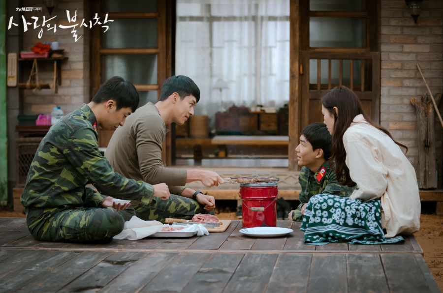
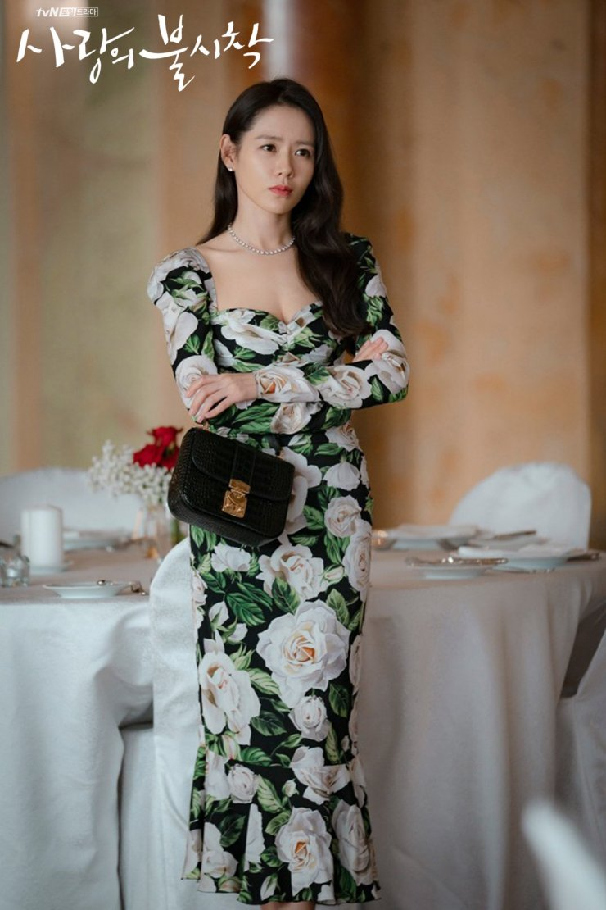
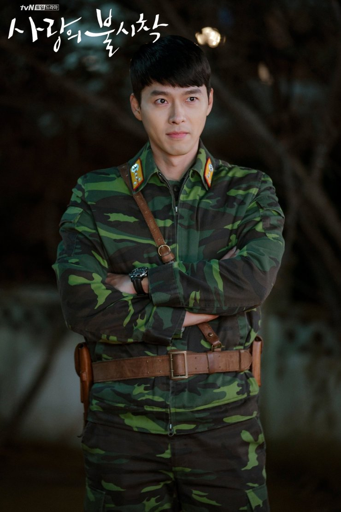
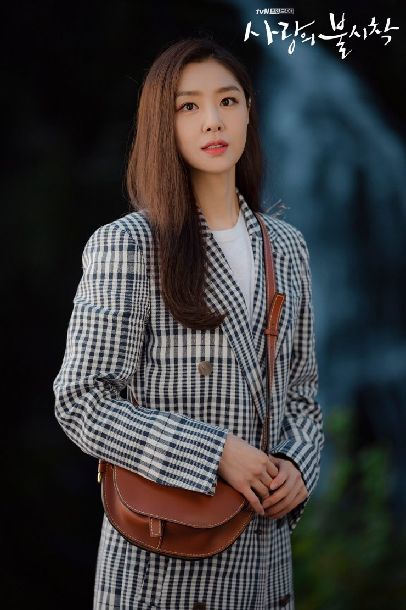

Sinopsis
Yoon Se-ri (Son Ye-jin) adalah seorang pewaris konglomerat di Korea Selatan. Suatu hari, saat paralayang, kecelakaan yang disebabkan oleh angin kencang membuat Se-ri melakukan pendaratan darurat di Korea Utara. Di sana, ia bertemu dengan Ri Jeong-hyuk (Hyun Bin), seorang perwira tinggi Korea Utara. Jung-hyeok mencoba untuk melindungi dan menyembunyikannya. Segera setelah itu, ia jatuh cinta dengan Se-ri.

Penghargaan
- Best Supporting Actress
- Tiktok Popularity Award (Male)
- Tiktok Popularity Award (Female)
- Bazaar Icon Award
Main Actor

Son Ye-jin
Yoon Se-ri
Seorang wanita pewaris Korea Selatan dengan sejarah keluarga yang bermasalah karena ia adalah anak tidak sah Ayahnya. Meskipun demikian, dia adalah seorang pengusaha sukses yang mendirikan perusahaanya sendiri. Dia bertemu Ri Jeong-hyuk setelah kecelakaan pendaratan di Korea Utara karena kecelakaan paralayang.

Hyun Bin
Ri Jeong-hyuk
Seorang kapten yang terampil dan berdedikasi dalam tentara Korea Utara yang menyembunyikan dan melindungi Se-ri setelah dia secara tidak sengaja mendarat di negaranya. Jeong-hyuk adalah pianis berbakat yang harus kembali ke negara asalnya bergabung dengan Ayahnya dala militer.
Kim Jung-hyun
Goo Seung-joon
Seorang pengusaha muda dan kaya, yang juga mantan tunangan Seri (Kakaknya berharap untuk penyatuan melalui perjodohan ini). Dia menggelapkan uang dari perusahaan yang dijalankan oleh Ayah Se-ri dan melarikan diri ke Korea Utara.

Seo Ji-hye
Seo Dan
Seorang musisi bercita-cita tinggi yang berasal dari kalangan keluarga konglomerat di Korea Utara. Tunangan Ri Jeong-hyuk melalui perjodohan orang tuanya. Meskipun dia jatuh cinta dengan Jeong-hyuk, namun perasaannya tidak terbalas.